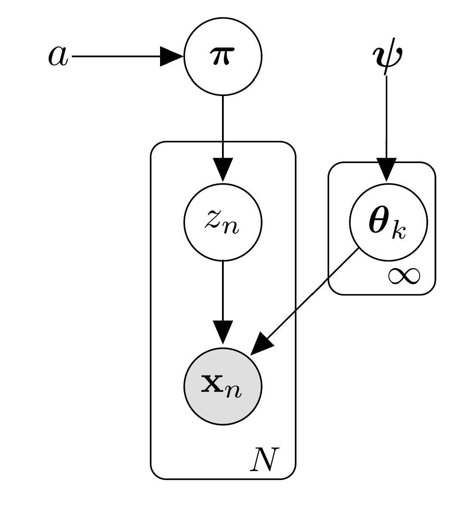

Dùng các loại network: Auto Encoder, Variational Auto Encoder, Generative Adversarial Network
để học representation cho các data instance. Dùng representation đó để clustering
Bài toán tối ưu sẽ gồm 2 loại loss:
Network Loss: reconstruction loss trong AE, variational loss trong VAE, hoặc adversarial loss trong GAN
Clustering loss: k-mean loss, cluster assignment hardening loss
Để estimate giá trị cho các parameters, ta có thể dùng Gibbs sampling

Data Science 101
Evaluation
Data Science 101 / Clustering
Internal Evaluation
Internal Evaluation dùng khi chúng ta không biết ground truth
Davies–Bouldin Index (DBI)
\[\begin{aligned}
DBI=\frac{1}{K}\sum_{k=1}^K{\underset{i\neq k}{\text{max}}{\left(\frac{\sigma_i+\sigma_k}{d\left(c_i,c_k\right)}\right)}}
\end{aligned} \]
trong đó $K$ là số lượng clusters, $c_k$ là trung tâm của cụm thứ $k$, $\sigma_k$ là trung bình khoảng cách giữa các cặp
data instance trong cụm thứ $k$ và $d\left(c_i,c_k\right)$ là khoảng cách giữa trung tâm cụm thứ $i$ và thứ $k$
DBI càng nhỏ càng tốt
Data Science 101 / Clustering
External Evaluation
External Evaluation dùng khi biết ground truth (các data instance nào thuộc cùng 1 nhóm)
TP là số lượng các pairs mà ta gom chung vô cùng 1 nhóm và bản chất chúng cũng thuộc cùng 1 nhóm
FP là số lượng các pairs mà ta gom chung vô cùng 1 nhóm và bản chất chúng KHÔNG thuộc cùng 1 nhóm
FN là số lượng các pairs mà ta KHÔNG gom chung vô cùng 1 nhóm và bản chất chúng lại thuộc cùng 1 nhóm
TN là số lượng các pairs mà ta KHÔNG gom chung vô cùng 1 nhóm và bản chất chúng KHÔNG thuộc cùng 1 nhóm